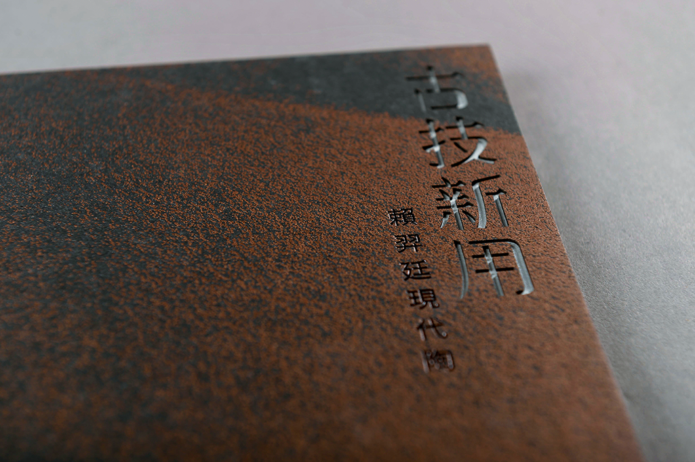
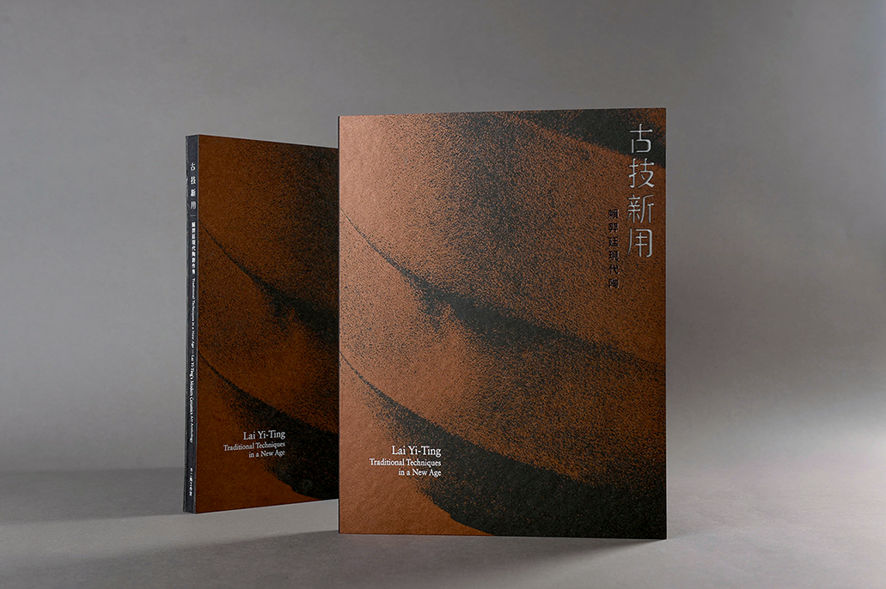
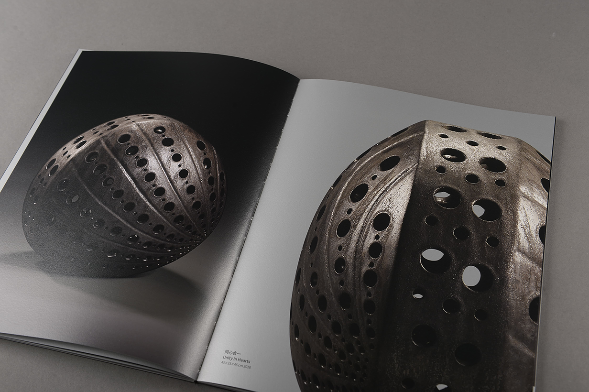
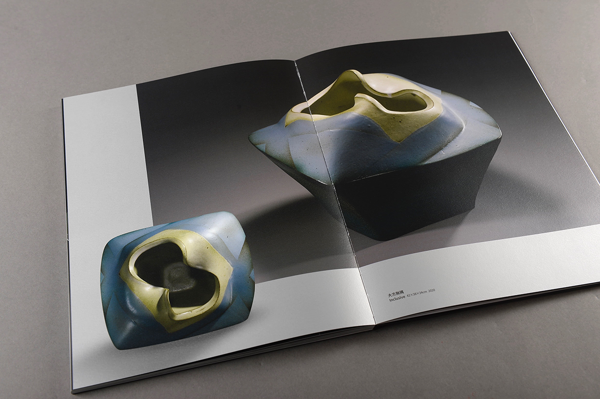
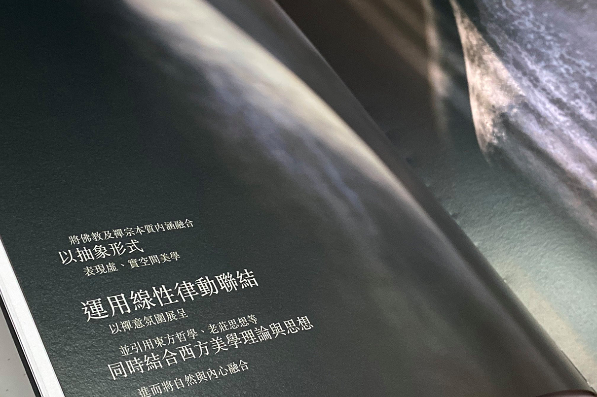
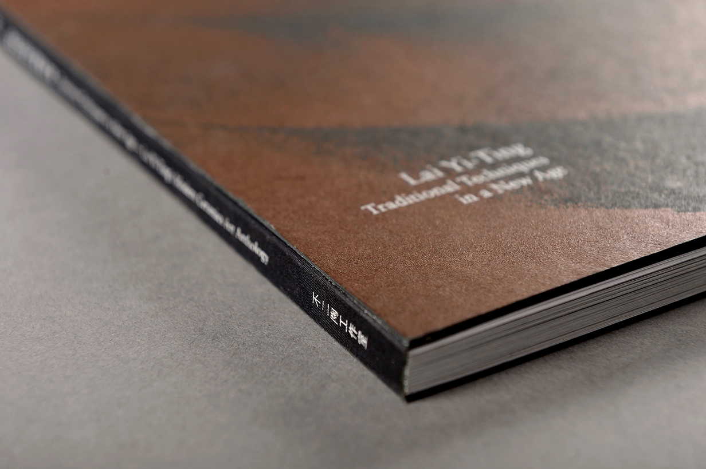

<((((
*
@
<
Traditional Techniques in the New Age
[2020]
Exhibition catalog of ceramic artist Lai Yi Ting, published by Yingge Ceramics Museum.
deliverables
Publication
credits
Designed in ⤷
Eaton
﹏﹏﹏﹏﹏﹏﹏﹏﹏﹏﹏﹏﹏﹏﹏﹏﹏﹏﹏﹏﹏﹏﹏﹏﹏﹏﹏﹏﹏﹏﹏﹏﹏﹏﹏﹏﹏﹏﹏﹏﹏﹏﹏﹏﹏﹏﹏﹏﹏﹏﹏﹏﹏﹏﹏﹏﹏﹏﹏﹏﹏﹏﹏﹏﹏﹏﹏﹏﹏﹏﹏﹏﹏﹏﹏﹏﹏﹏﹏﹏﹏﹏﹏﹏﹏﹏﹏﹏﹏﹏
     